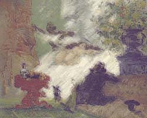

|
Cezanne:
They say I am mad to show the old coot as he was, a voyeur
pure and simple. Peering into the history books ahead,
some will praise the objective way Manet's women
confront the viewer, calm and poised. But this is
a painter's conceit, even I can see that,
I who paint my wife covered from public view,
like the negress who runs, bed sheet in hand,
to protect her favorite Mistress from the prying eyes
of men and their progressive philosophies.
|
 |